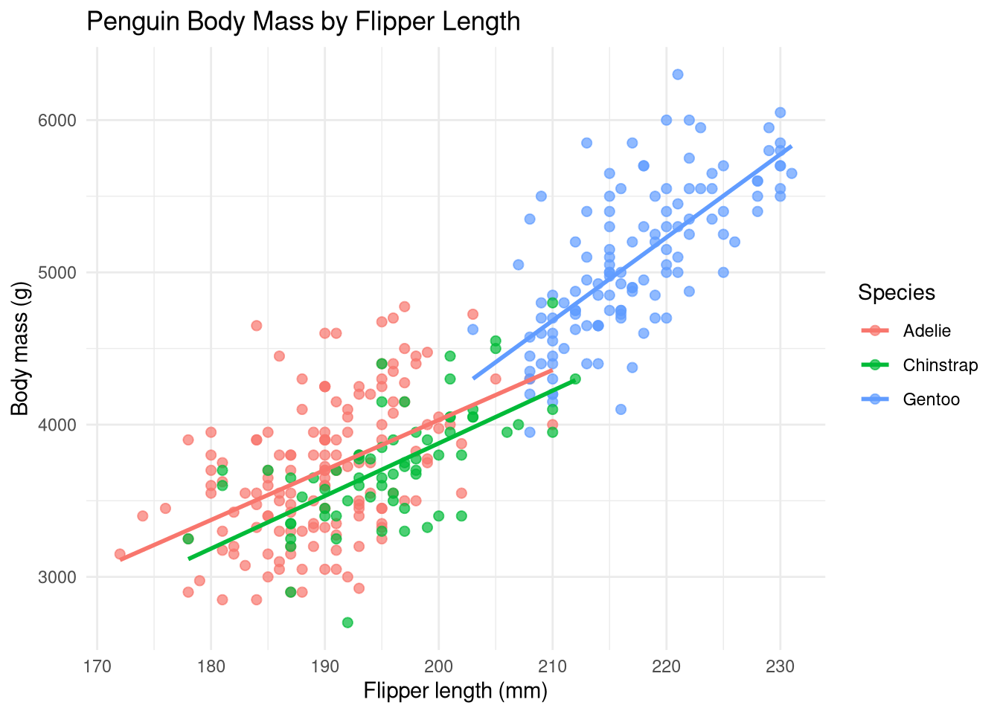

library(reticulate)
use_python("/usr/bin/python", required = TRUE)Python-to-R Data Pipeline Demonstration
Overview
This report demonstrates a reproducible mixed-language data pipeline using Python, R, and Quarto.
Python is used to retrieve and prepare the source data, including selecting relevant variables and removing incomplete observations. The cleaned pandas DataFrame is then transferred to R for statistical modeling, inference, visualization, and prediction. Quarto combines each stage into a single reproducible report.
Setup
R: Python integration
This is required for Python to pass off data to R within a Quarto report.
Python: Data acquisition
The Palmer Penguins dataset is downloaded directly from its public repository, allowing the report to be reproduced without relying on a local database or file.
import pandas as pd
url = "https://raw.githubusercontent.com/allisonhorst/palmerpenguins/main/inst/extdata/penguins.csv"
penguins = pd.read_csv(url)
penguins.head() species island bill_length_mm ... body_mass_g sex year
0 Adelie Torgersen 39.1 ... 3750.0 male 2007
1 Adelie Torgersen 39.5 ... 3800.0 female 2007
2 Adelie Torgersen 40.3 ... 3250.0 female 2007
3 Adelie Torgersen NaN ... NaN NaN 2007
4 Adelie Torgersen 36.7 ... 3450.0 female 2007
[5 rows x 8 columns]Python: Data preparation
Only the variables required for the analysis are retained. Observations containing missing values in these variables are removed.
penguins_clean = (
penguins[
[
"species",
"flipper_length_mm",
"body_mass_g"
]
]
.dropna()
)
penguins_clean.head() species flipper_length_mm body_mass_g
0 Adelie 181.0 3750.0
1 Adelie 186.0 3800.0
2 Adelie 195.0 3250.0
4 Adelie 193.0 3450.0
5 Adelie 190.0 3650.0Analysis
R: Data transfer
The cleaned pandas DataFrame is transferred from the Python session into R using reticulate.
penguins_r <- py$penguins_cleanR: Linear regression
A multiple linear regression model is fitted to estimate body mass using flipper length and species.
model <- lm(
body_mass_g ~ flipper_length_mm + species,
data = penguins_r
)The coefficient p-values are extracted separately for concise presentation.
summary(model)$coefficients[, "Pr(>|t|)"] (Intercept) flipper_length_mm speciesChinstrap speciesGentoo
2.551453e-11 1.401600e-32 3.980986e-04 5.391808e-03 Visualization
The scatter plot shows the relationship between flipper length and body mass for each penguin species. Separate regression lines are fitted within each species.
library(ggplot2)
ggplot(
penguins_r,
aes(
x = flipper_length_mm,
y = body_mass_g,
color = species
)
) +
geom_point(alpha = 0.7, size = 2) +
geom_smooth(method = "lm", se = FALSE) +
labs(
title = "Penguin Body Mass by Flipper Length",
x = "Flipper length (mm)",
y = "Body mass (g)",
color = "Species"
) +
theme_minimal()
Prediction
The fitted model is used to predict body mass for new combinations of flipper length and species. Prediction intervals represent the expected range for individual penguins with these characteristics.
new_penguins <- expand.grid(
flipper_length_mm = c(180, 200, 220),
species = c("Adelie", "Chinstrap", "Gentoo")
)
predictions <- predict(
model,
newdata = new_penguins,
interval = "prediction"
)
prediction_table <- cbind(
new_penguins,
predictions
)
prediction_table flipper_length_mm species fit lwr upr
1 180 Adelie 3295.495 2551.938 4039.052
2 200 Adelie 4109.603 3366.001 4853.206
3 220 Adelie 4923.711 4160.688 5686.735
4 180 Chinstrap 3088.985 2338.779 3839.191
5 200 Chinstrap 3903.093 3158.574 4647.613
6 220 Chinstrap 4717.201 3958.913 5475.490
7 180 Gentoo 3562.305 2787.356 4337.254
8 200 Gentoo 4376.413 3627.505 5125.321
9 220 Gentoo 5190.521 4448.649 5932.392Conclusion
This report demonstrated a reproducible mixed-language workflow in which Python was used to retrieve and clean the Palmer Penguins dataset before passing the prepared data to R for analysis.
The regression results showed that flipper length is a strong predictor of body mass. Species also contributed additional explanatory value, reflecting meaningful differences in body size among Adelie, Chinstrap, and Gentoo penguins. The visualization reinforced these findings by showing a clear positive relationship between flipper length and body mass within each species.
The fitted model was then used to generate body-mass predictions for new observations. Together, these steps demonstrate how Python, R, and Quarto can be combined into a single reproducible pipeline for data acquisition, preparation, statistical modeling, visualization, and prediction.